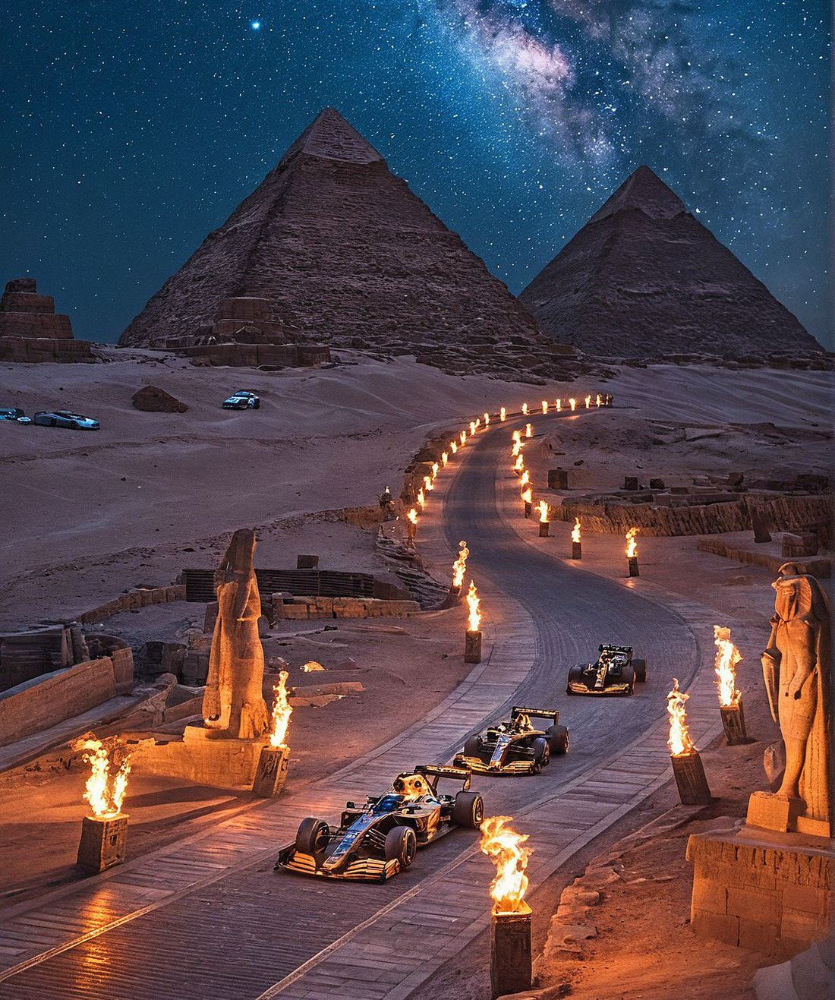
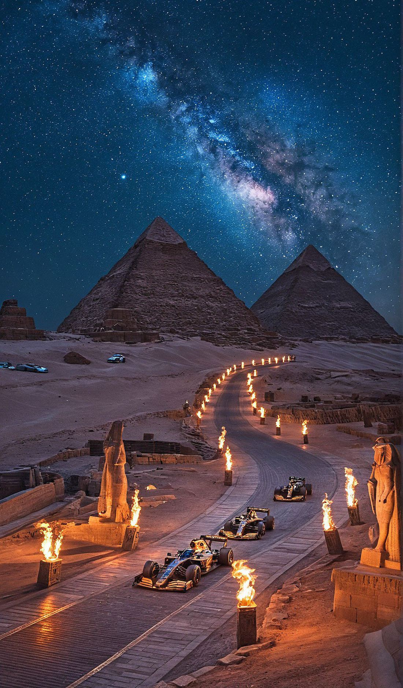
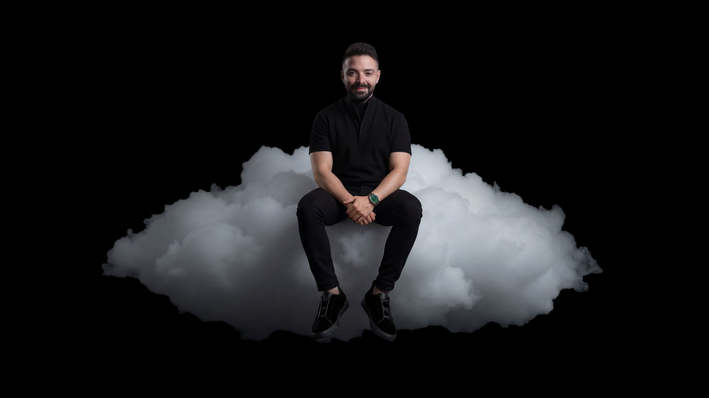
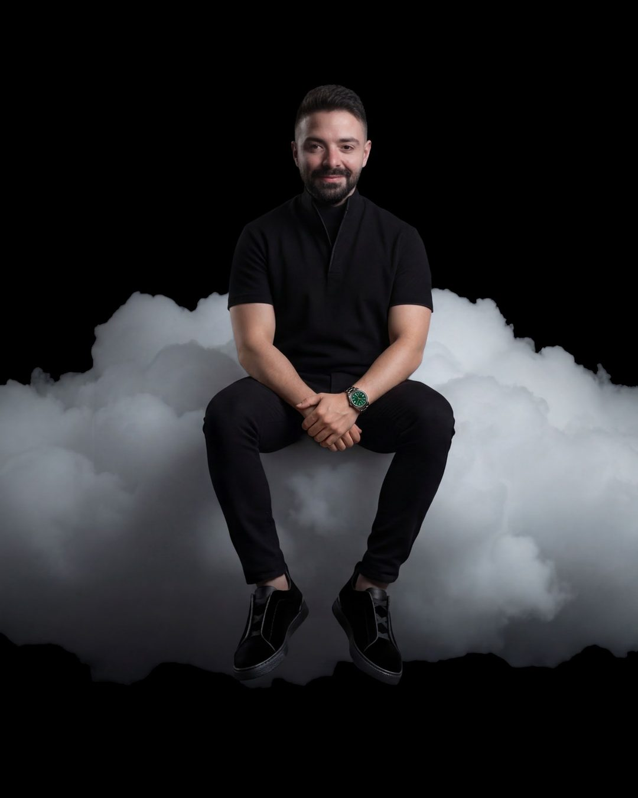
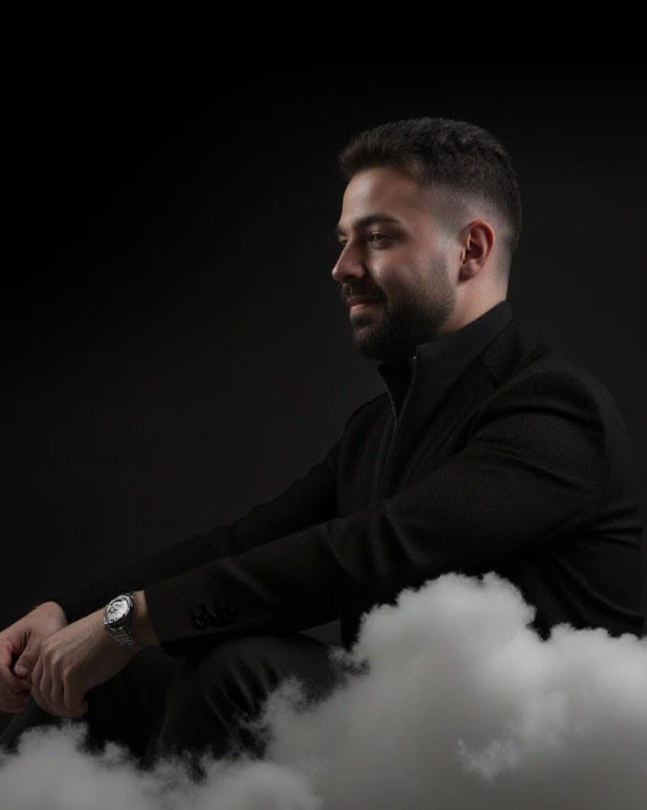
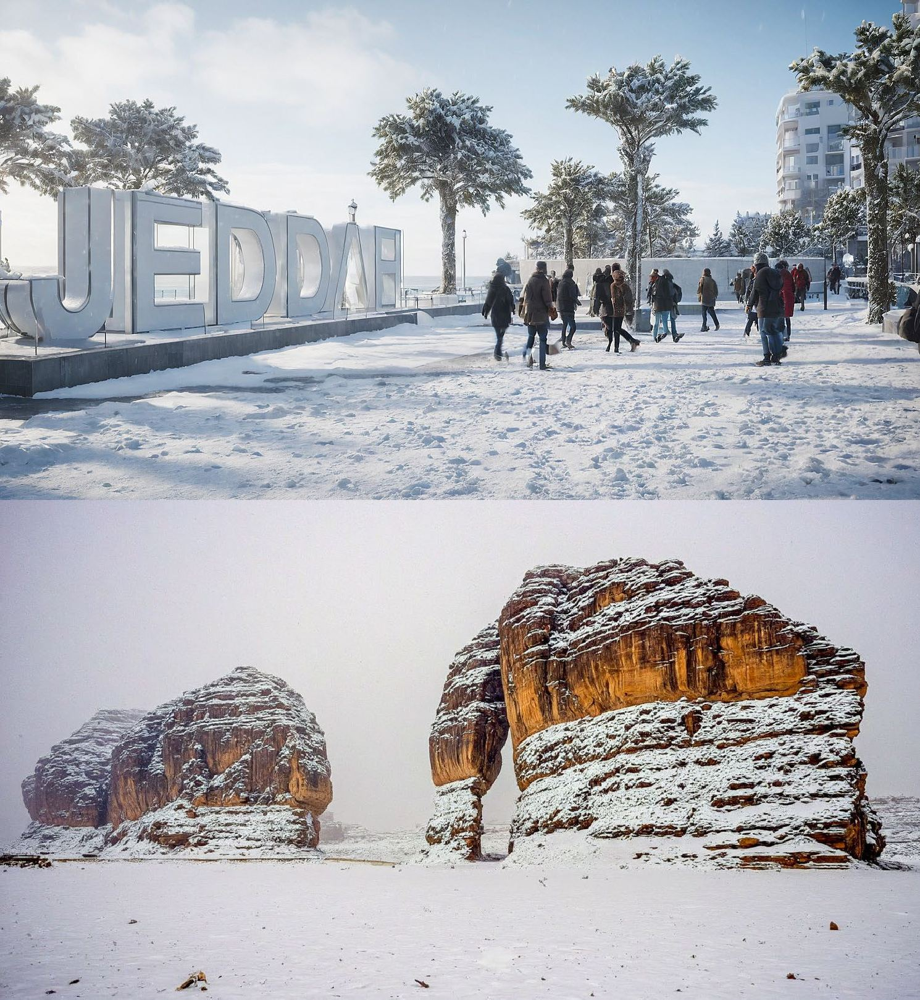
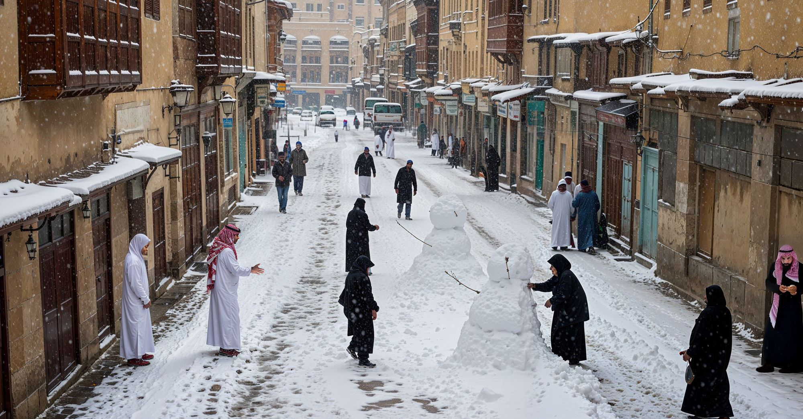
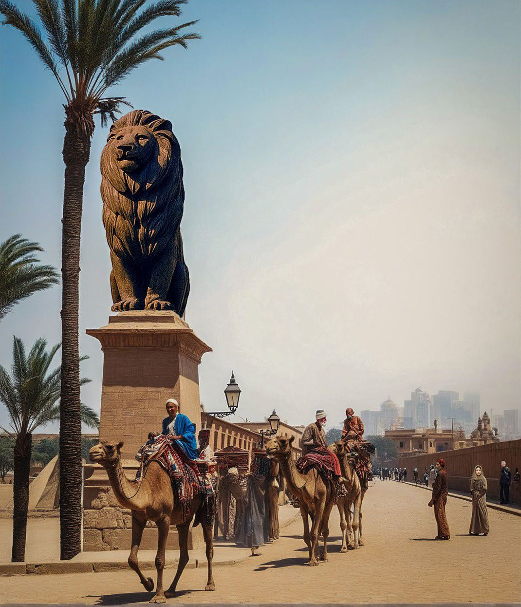
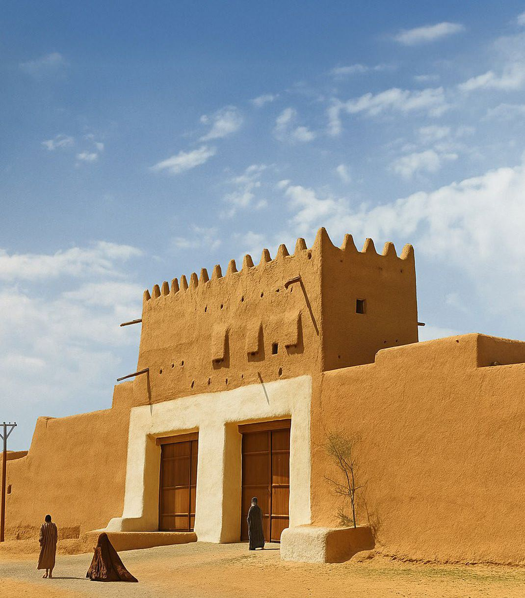

F1 in Egypt
Night race at the pyramids


Event Creative DirectorRiyadh, Saudi Arabia
Explore the workCharles Nasr
Event Creative Director · Sela
I work with teams to bring live shows and places to life.
Live shows · Places · Visual stories
A few of the projects I've helped bring to life.
Six Kings Slam 2 · 2 films
Opening ceremony
Show recording
The Sphere · 3 films
Content in motion
Character study
The disappearing surface
AI explorations · 8 films
AI film · 0:36
An imagined night race at the pyramids.
AI film · 0:30
A train journey through underwater worlds and cities in the clouds.
AI film · 0:30
A journey through Lebanon, from the coast to its living history.
AI film · 0:30
A metro window opens onto ancient Egypt.
AI film · 0:30
An ordinary commute turns into a close encounter beneath the sea.
AI film · 0:15
A personal introduction through a world of creative tools.
AI film · 0:15
A character experiment in a world made of yarn.
AI film · 0:15
A personal journey through shifting rooms, colour and scenery.
Why I do it
“The only way to do great work is to love what you do.”
Steve Jobs · Stanford, 2005
I was lucky to find what I love: creating events.

About Charles
I started in architecture and 3D visualisation. When I joined Sela as a design architect in 2019, I began working on entertainment projects. That was how I found my way into events, and the work I wanted to keep doing.
Today my work covers concept design, event identity and visual content, including projection mapping. I work with our designers, production teams and partners to take an idea from the first sketch through to the live event.
Worked with
2019 → 2026
Selected work · Charles Nasr
Explore the projectsPersonal projects made while trying new tools, visual styles and ways to tell a story. I also use AI in our studio work and help the team learn how to use it.
Eight films. Different worlds.
Choose a film to play, with sound and full-screen controls.
AI film · 0:36
An imagined night race at the pyramids.
AI film · 0:30
A train journey through underwater worlds and cities in the clouds.
AI film · 0:30
A journey through Lebanon, from the coast to its living history.
AI film · 0:30
A metro window opens onto ancient Egypt.
AI film · 0:30
An ordinary commute turns into a close encounter beneath the sea.
AI film · 0:15
A personal introduction through a world of creative tools.
AI film · 0:15
A character experiment in a world made of yarn.
AI film · 0:15
A personal journey through shifting rooms, colour and scenery.
Image studies


Night race at the pyramids


Riyadh and Diriyah under snow


Our Arab cities, centuries ago
Recognition · swipe to read →
“Production Value A++”
The Tennis Letter
“A five-minute cinematic experience with the best of the best.”
The Tennis Channel
“Great match and even better atmosphere. Thank you Riyadh for your support.”
Novak Djokovic
«افتتاح عالمي لحدث عالمي في الرياض»
H.E. Turki Al Alshikh — “A world-class opening for a world-class event in Riyadh”